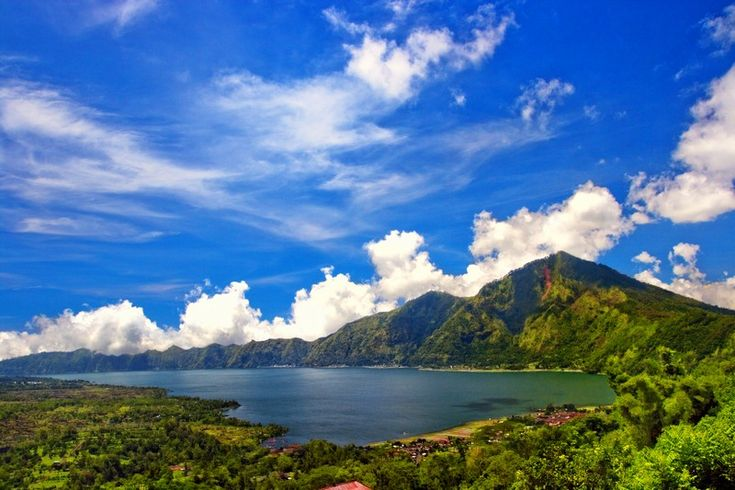
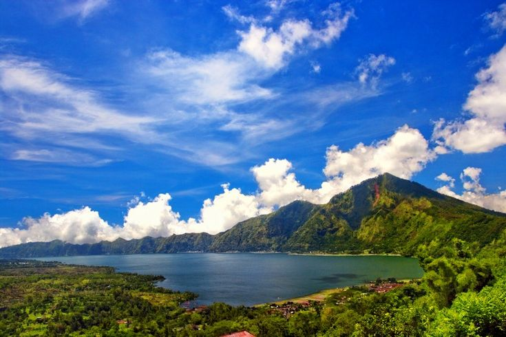

Danau Batur adalah danau vulkanik terbesar di Bali yang terletak di dalam kaldera Gunung Batur. Dengan panjang sekitar 7,5 km dan lebar 2,5 km, danau ini menawarkan pemandangan spektakuler dengan air yang jernih dikelilingi oleh tebing-tebing kaldera yang dramatis. Danau ini bukan hanya indah secara visual, tetapi juga memiliki makna spiritual yang dalam bagi masyarakat Bali. Nikmati ketenangan alam, budaya tradisional, dan aktivitas menarik di sekitar danau.
 

Temukan pesona alam dan pengalaman unik di sekitar danau vulkanik terbesar Bali
Danau Batur
Nikmati ketenangan danau dengan menyewa perahu tradisional mengelilingi danau.
Danau Batur
Pura penting yang didedikasikan untuk Dewi Danu, dewi air dan kesuburan.
Danau Batur
Relaksasi di pemandian air panas alami dengan view danau yang menakjubkan.